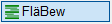
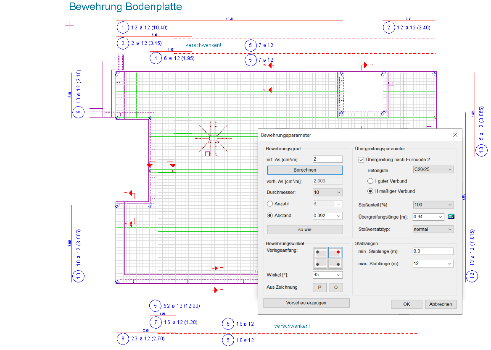
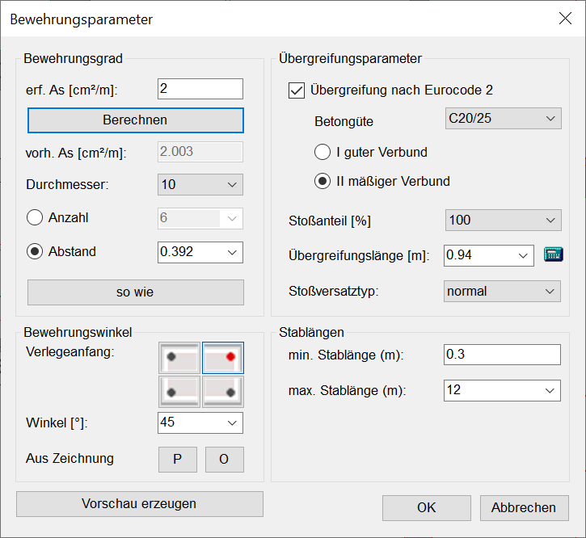
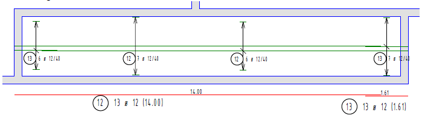

")
")
In rechteckigen oder polygonalen Verlegebereichen werden Stabstahlstaffeln mit versetzt angeordneten Stößen ohne Finite Elemente verlegt. Die erforderlichen Stahlauszüge werden automatisch erstellt.
Verwendung
Mit der Flächenbewehrungsfunktion [FläBew] können Sie eine Umrissgeometrie definieren und die Bewehrung mit gleichem Durchmesser und Stababstand generieren. Die Eingabe von Durchbrüchen ist ebenfalls möglich. Für einen schnelleren Arbeitsablauf können Sie die bereits definierte Geometrie wieder übernehmen, um eine weitere Verlegung mit anderen Parametern zu generieren. Mittels einer Vorschau können Sie das Ergebnis vorab prüfen und ggf. weitere Anpassungen vornehmen.
Den Wert für die Übergreifungslänge können Sie automatisch ermitteln lassen oder manuell eingeben. Ebenso können Sie einstellen, ob der Stoßversatz „mittig“, „normal“ oder „verschwenkt“ ausgeführt werden soll.
Bei der Flächenbewehrung wird die Verlegung innerhalb der definierten Umrissgeometrie erzeugt und die Auszüge werden in Flucht zur Verlegerichtung platziert. Die mit der Flächenbewehrung erzeugte Verlegung wird dabei als Staffel erkannt, sofern die Stablänge und der Stababstand gleich sind. Die Staffel lässt sich mit dem Positionierungsprogramm [BiPos] positionieren.
Für ein bestmögliches Ergebnis empfehlen wir Ihnen, die Flächenbewehrung in rechtwinkligen Geometrien anzuwenden.
 |
|
Hinweise: |
|
·Falls die Kontur eines Polygons aus unterschiedlichen Maßstäben besteht, werden Sie nach dem Bestätigen des Polygons in einer Meldung darauf hingewiesen. Ihnen werden alle gefundenen Maßstäbe angezeigt, sodass Sie den korrekten Maßstab auswählen können. Wählen Sie aus der Dropdown-Liste den gewünschten Maßstab und bestätigen Sie mit OK. Achtung! Der im Dialog gewählte Maßstab wird nur für die Berechnung verwendet. Die ursprünglichen Maßstäbe der Elemente werden nicht geändert!
·Beim Abstecken von Öffnungen wird immer der Maßstab der Umrissgeometrie übernommen. |


1.Umrissgeometrie und Öffnungen definieren
Der Verlegebereich stellt die Begrenzung der Bewehrung dar. Das Programm schneidet an diesen Grenzen die Stäbe ab. Eventuell müssen Sie durch geeignete Maßnahmen z. B. für die Einspannbewehrung sorgen. Das kann durch die zusätzliche Anordnung von Winkeleisen geschehen.
§Geben Sie den Abstand von der Außen- bzw. Innenkante ein und bestätigen Sie mit der Eingabetaste. [Abstand].
Abstand Außenkante |
= Positiver Wert |
Abstand Innenkante |
= Negativer Wert |
§Wählen Sie unter der Abfrage eine der folgenden Selektionsmöglichkeiten aus:
|
Definition eines Polygons durch Anklicken von Punkten. Klicken Sie die Punkte nacheinander an. Wenn Sie den ersten Punkt wieder anklicken, wird die Fläche geschlossen. [Punkt wählen]. –Das Polygon wird automatisch geschlossen, wenn der erste Punkt ein zweites Mal angeklickt wird. –Bei den Funktionen [Punkte] und [Elemente] können Sie während des Absteckens den Abstand ändern: –Wenn Sie auf Beispiel: Abstecken eines Polygons Ist der Wer positiv und Sie klicken die Punkte gegen den Uhrzeigersinn an, wird der Abstand nach innen gezeichnet. Ist der Wert negativ und Sie klicken die Punkte im Uhrzeigersinn an, wird der Abstand ebenfalls nach innen gezeichnet.
Entspricht dem Abstand von der Außenkante.
Ist der Wert negativ und Sie klicken die Punkte gegen den Uhrzeigersinn an bzw. positiv und im Uhrzeigersinn, wird der Abstand rechts der angeklickten Punkte gezeichnet. |
|
Bestimmung eines Polygons oder Auswahl eines Kreises durch Anklicken von Elementen. Klicken Sie die Kanten nacheinander auf der Seite an, zu welcher der Abstand angetragen werden soll. [Elemente wählen]. Sie können sowohl Linien als auch Kreise anklicken. Das erste und letzte Element sollte eine Linie sein, um eindeutige Schnittpunkte zu erzeugen. |
|
Auswahl einer in der Zeichnung vorhandenen, geschlossenen Form (aus Linien und/oder Kreisen). Das Polygon muss auf der Zeichenfläche vollständig sichtbar sein, ansonsten wird es nicht erkannt. Zoomen Sie ggf. aus der Zeichnung heraus oder verschieben Sie den Bildausschnitt. Wenn Sie einen negativen Abstand eingeben, wird der Umriss innerhalb der Form gezeichnet. Um das Polygon auszuwählen, klicken Sie in die geschlossene Form. [In Polygon klicken]. |
|
Übernahme des Umrisses einer bereits bewehrten Form. Klicken Sie einen Polygonpunkt der Form an. [Polygonpunkt anklicken]. Das Polygon wird markiert und Sie gelangen direkt zur Angabe der Bewehrungsparameter (Dialog). |

 klicken, wird der erste Punkt mit dem letzten Punkt verbunden.
klicken, wird der erste Punkt mit dem letzten Punkt verbunden.


§Geben Sie nun die Öffnungen innerhalb der Umrissgeometrie an. [Öffnungen n].
Verfahren Sie bei den Öffnungen, wie bei der Definition der Umrissgeometrie, indem Sie zunächst den Abstand angeben und anschließend die Polygone definieren.
§Um den Verlegebereich (Umrissgeometrie + Öffnungen) zu bestätigen und mit der Bearbeitung fortzufahren, bestätigen Sie den [Abstand] und klicken Sie auf .
Der Dialog Bewehrungsparameter wird geöffnet.
2.Bewehrungsparameter anpassen
Im Dialog können Sie die gewünschten Angaben zur Ermittlung der Stabdurchmesser, des Stababstands oder der Anzahl der Stäbe eingeben.
Wenn alle Angaben vollständig sind, klicken Sie auf Berechnen und dann auf OK, um die Bewehrung zu generieren. Mit  können Sie die generierte Bewehrung rückgängig machen und Ihre Angaben im Dialog anpassen.
können Sie die generierte Bewehrung rückgängig machen und Ihre Angaben im Dialog anpassen.
 |
Bewehrungsgrad
Die Angabe von erf. as ist optional, vorh. as wird immer ermittelt und angeschrieben. Wenn Sie erf. as eingeben, können Sie durch Anklicken der Schaltfläche Berechnen die Ermittlung der Anzahl oder des Abstands sowie des vorh. as auslösen. Wenn die Übergreifung nach Eurocode 2 berechnet werden soll, setzen Sie im Dialogbereich Übergreifungsparameter den entsprechenden Haken. Die nach Betongüte und Verbundbereich unterschiedlichen Werte für die Übergreifungslängen und den Stoßversatz können Sie manuell ändern.
erf. as [cm2/m]
Angabe der erforderlichen Gesamt-Querschnittsfläche (optional).
Berechnet die benötigte Anzahl der Stäbe bzw. den Abstand der Stäbe.
vorh. as [cm2/m]
Vorhandene Gesamt-Querschnittsfläche. Klicken Sie nach Eingabe von erf. as auf die Schaltfläche Berechnen, um vorh. as zu ermitteln.
Durchmesser
Auswahl des Stabdurchmessers. Klicken Sie auf  und wählen Sie aus der Dropdown-Liste einen Durchmesser aus.
und wählen Sie aus der Dropdown-Liste einen Durchmesser aus.
Anzahl oder Abstand
Auswahl der Berechnungsart. Nach Auslösen der Berechnung über die Schaltfläche Berechnen wird das Ergebnis im zugehörigen Eingabefeld angezeigt.
Anzahl |
Berechnungsergebnis mit Anzahl der benötigten Stäbe. |
Abstand |
Berechnungsergebnis mit Abstand der Stäbe. |

Übernahme des Durchmessers, des Abstands oder der Anzahl aus einer vorhandenen Verlegung. Klicken Sie die Verlegung an, deren Werte Sie übernehmen möchten. Klicken Sie anschließend auf Berechnen, um die Bewehrungsparameter anzupassen. Die Übergreifungslänge wird automatisch angepasst.
Bewehrungswinkel
Hier können Sie angeben, in welchem Winkel die Verlegung gezeichnet werden soll.
Verlegeanfang festlegen
Der Verlegeanfang legt fest, von welchem Punkt der erste Stab verlegt werden soll. Dabei stellt die Position der Zeichenmarke den Verlegeanfang dar.
Sie können aus vier verschiedenen Startpunkten wählen, sofern der Drehwinkel des Verlegebereiches mit dem unter Winkel [°] angegebenen Wert identisch ist.
Klicken Sie den entsprechenden Startpunkt an:
obere linke Ecke |
|
untere linke Ecke |
|
obere rechte Ecke |
|
untere rechte Ecke |
Um die Vorschau in der Zeichnung zu aktualisieren, klicken Sie auf Vorschau erzeugen.
Winkel [°]
Tippen Sie einen Winkel ein oder wählen Sie aus der Dropdown-Liste einen Vorschlagswert aus.
Aus Zeichnung
Mit dieser Option können Sie die Verlegerichtung durch Anklicken eines Elements in der Zeichnung bestimmen.
|
Ausrichtung der Verlege-Grundlinie. P...: Parallel zu einem Bezugselement. Nach dem Anklicken der Hilfsfunktion wird der Dialog vorübergehend ausgeblendet. Klicken Sie entweder P... oder O... und anschließend ein beliebiges Zeichenelement an. Der Dialog wird wieder geöffnet und der ermittelte Winkel unter Winkel [°] angezeigt. |


Übergreifungsparameter
Übergreifung nach Eurocode 2
|
Keine automatische Berechnung nach Eurocode 2. |
|
Berechnung der Übergreifungslänge nach Eurocode 2. Blendet die Optionen für die erforderlichen Angaben im Dialog ein. Betongüte (MN/m²) Stellen Sie die nötige Betongüte ein und wählen Sie die Verbundbedingungen für die Berechnung der Verankerungs- und Übergreifungslängen (I guter Verbund / II mäßiger Verbund). |


Stoßanteil
Auswahl eines Stoßanteils.
Übergreifungslänge [m]:
Wenn unter Übergreifung nach Eurocode 2 ein Haken gesetzt ist, wird die Übergreifung automatisch berechnet. Dabei wird bei einem Wert < 0 in erf. As das Verhältnis von erf. As zu vorh. As als Berechnungsgrundlage genommen.
Aus der Dropdown-Liste können Sie eine Übergreifungslänge ohne oder mit Abminderung für α6 wählen. Dabei entspricht der erste "obere" Wert in der Dropdown-Liste einer Übergreifungslänge ohne Abminderung und der zweite Wert einer Übergreifungslänge mit Abminderung. Wenn die Übergreifungslänge mit Abminderung nicht angezeigt wird, erhöhen Sie den Abstand zwischen den Stäben.
Beiwert α6 zur Ermittlung der Übergreifungslänge
|
||||||||||||||||||||||||||||||||
Um eine individuelle Übergreifung einzugeben, entfernen Sie den Haken aus der Checkbox. In der Dropdown-Liste können Sie einen der 10 zuletzt eingegebenen Werte wählen.
Stoßversatztyp:
normal Die Verlegung basiert auf der Verschiebung der Stoßmitten: Beispiel 50% Stoß: In der ersten Reihe wird n*L + R1 verlegt. In der zweiten Reihe wird der Stoß um 1,3*F*ls verschoben und anschließend mit n*L + R2 ausgelegt. Beim 33% Stoß wird eine und beim 25% Stoß eine weitere Reihe hinzugelegt, deren Stöße um 1,3*F*ls versetzt angeordnet sind.
mittig Die Verlegung basiert auf der Variation der Stablängen: Beispiel 50% Stoß: In der ersten Reihe wird n*L + R1 verlegt. In die zweite Reihe kommen ½*L + n*L + R2. Beim 33% Stoß werden in die erste Reihe n*L + R1, in der zweiten Reihe 2/3*L + n*L + R2 und in der dritten Reihe 1/3*L + n*L + R3 verlegt.
verschwenkt Mit dieser Option wird die Verlegung wechselseitig vorgenommen. Dabei wird am Anfang des Verlegebereichs mit einem ganzen Stab begonnen und so lange mit einem ganzen Stab + Übergreifung fortgesetzt, bis das Ende des Verlegebereichs erreicht ist. Wenn am Ende kein ganzer Stab mehr passt, wird der letzte Stab am Ende gekürzt. Anschließend wird in der zweiten Reihe wieder von der gegenüberliegenden Seite mit einem ganzen Stab begonnen und bis zum Ende des Verlegebereichs hinzugelegt. Der letzte Stab wird eventuell geschnitten. Der Anteil der gestoßenen Stäbe beträgt 50%. Die Auswahl eines anderen Stoßanteils ist nicht möglich.
Wenn in der zweiten Reihe der Abstand zwischen den Stoßmitten kleiner 1,3 * l0 (Übergreifungslänge) ist, wird der Stoß in der zweiten Reihe soweit verschoben, bis die Stoßmitten den erforderlichen Abstand einhalten. Dadurch fängt in diesem Fall die zweite Reihe mit einem gekürzten Stab an und wird anschließend mit ganzen Stäben fortgesetzt, bis am Ende wieder ein geschnittener gelegt wird.
|
Stablängen
min. Stablänge [m]:
Angabe der Stab-Mindestlänge.
max. Stablänge [m]:
Angabe der maximalen Stablänge, z. B. wegen Anlieferung.
Generiert die Bewehrung als Vorschau in der Zeichnung. Sie können weitere Änderungen vornehmen (z. B. den Stoßanteil ändern) oder mit OK die Berechnung der Bewehrung starten.

Startet die Berechnung für die erforderlichen Durchmesser, den Abstand oder die Anzahl der Stäbe. Die Verlegung wird ausgeführt und die zugehörigen Stahlauszüge werden erstellt.
Wenn Sie den Dialog nochmals öffnen, stehen ihnen wieder die zuletzt eingegebenen Angaben zur Verfügung.
|
Hinweis: |
|
Wenn der erforderliche Mindestabstand nicht eingehalten wurde, werden Sie durch eine Meldung am unteren Bildschirmrand darauf hingewiesen. Sie können die Angaben korrigieren, oder die Arbeit mit den aktuellen Werten fortsetzen. |

Schließt den Dialog. Die vorgenommenen Einstellungen werden auf die zuletzt eingegebenen Werte zurückgesetzt.
Beispiel:
 |
Die Zeichnung wurde nachbearbeitet: Die Darstellung der Staffel ist mit [Formst | Staffel | generie: 0+1+0] auf einen mittigen Stab reduziert und dann mit [Formst | BiPos | Harfe → Pfeil (Endsymbol)] positioniert worden.